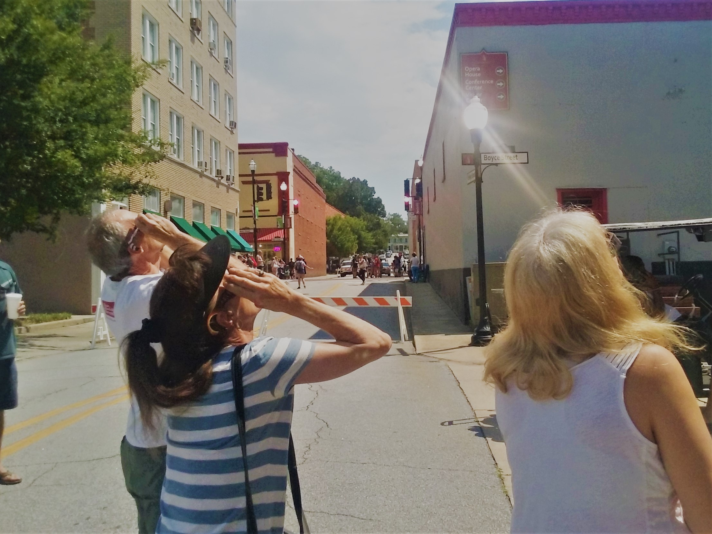

BY LESLIE MOSES
4-min. read
Aug. 22, 2017
In a world where things notoriously fall apart, sometimes you can get up early, trust a meteorologist and see things align beautifully, namely the sun and moon and a trip to my old home in South Carolina.
A year ago, my Uncle Randy, a meteorologist in Florida, prepared for the Aug. 21 eclipse that I knew nothing about.
When I arrived groggy and ready to go on Monday at 7:30 a.m., he had plenty of square paper glasses, scientific internet sites and plans A, B, and, if need be, several Cs ready.
Eclipse-bound, Uncle Randy and Aunt Eloise occupied the front seats of Eloise’s Honda; my Aunt Nancy and I sat in the back.
Nancy and I laughed and danced to oldies, pretending we’re Eloise’s inept and out-of-sync backup singers.
But it’s not all fun and games.
Talk turned celestial, and questions such as, “What’s a cloud?” were allowed and answered by the meteorologist.
Eloise and I put on our eclipse glasses and looked from the moving car at the sun. I’m just practicing for the real thing, but think the sun looks rather bare and humble before her big event just a few hours away.
Traffic is medium-heavy.
Plan A, settling in Orangeburg, S.C. to view the eclipse, is scratched. Too cloudy.
Plan B is a go.
Now Randy asks me: Which Newberry exit should we take?
He knows skies, but I knew the first exit would take us straight downtown, and that we could find parking if he turned left off traffic-blocked Main Street.
I had worked as a reporter in the city of 10,000, designated as an official NASA viewing site for the 2017 eclipse. But this was a new sight.
People crowded restaurants and stood outside of ice cream parlors and coffee shops in lines that wound into the street.
A nice couple running an antique shop let us use their bathroom, and pointed out a restaurant on a back street that just opened. We ate chips, chicken and tuna salad sandwiches, and praised the cool indoor air.
A corner television showed full eclipse sites already in effect. The sun’s unique glow was a cool sight for sure.
But we kept donning our shades and stepping outside to see the sky ourselves.
“Cloudy!” Randy announced once.
Eloise noticed that a hush then fell over the restaurant. No one could see the sun.
Plan C was now on the table with about 25 minutes to go.
Randy’s online map showed two small rain storms nearby, but we could still drive south to be smack on the path of totality. (Newberry sat just north of it.)
But then Nancy reported a “perfect” sky and we were set to stay.
Standing on another closed street, we gazed upward along with hundreds of others downtown, wearing cardboard-framed glasses.
In the dance, the sun now looked like the oft-seen shape of the moon: A thumbnail sliver, but the sun’s crescent shone more bright and yellow.
Quiet and mild-mannered Randy was different, too. This was meteorologist Christmas, and Eloise announced on the phone with her son, “Everybody is hyper!”
“This is just awesome!” Randy said.
The afternoon sky looked more like 7 p.m., prompting pre-mature glows from streetlights. It didn’t feel like evening, though.
It felt like a good kind of eerie with us all standing out there, soon cheering when the thinning thumbnail was all but covered by the moon.
And then it happened.
“Holy shit! That’s the corona!” yelled Randy.
The sun saved her best for the masses, and shone in her holy blazing skirt that I never saw coming. Randy said we could take off our glasses.
What we saw was only for the bare, cardboard-framed eye; it was prohibited to cameras.
No video on television showed what I saw. Not even close.
Randy said not to tell others that what photos showed didn’t compare to what we saw live, but I’m going to say it.
If TV showed an unlit match head, we saw it ablaze.
I couldn’t take a good picture, and only wasted a few seconds trying.
There it was. The corona.
I didn’t expect such brilliance.
I came for a cool sight and stood there, dazzled by glory instead.
“This is it! That’s a solar eclipse!” yelled Randy.
And the moon moved, Randy led a final cheer and the day’s second dawn unfolded.
Crickets then chirped and birds sang loudly.
“It freaks nature out,” Randy said.
It freaked me out, too. And not only the sight was out of sight.
It’s the alignment of it all.
It’s my groggy morning and cynicism in a half-hearted pursuit of a once-in-a-lifetime event, just moving along like the moon.
But my Newberry know-how aligned with fun aunts and a determined meteorologist uncle, and suddenly I’m gazing at the unexpected.
The drive home, which normally takes about 3 hours, took about 7.
But Nancy and I danced away some of the monotony, and I took out my notebook and wrote my gut-felt reaction to the eclipse in small letters, uncomfortable with my optimism:
“Better than expected.”